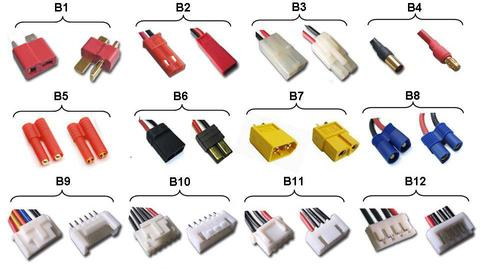
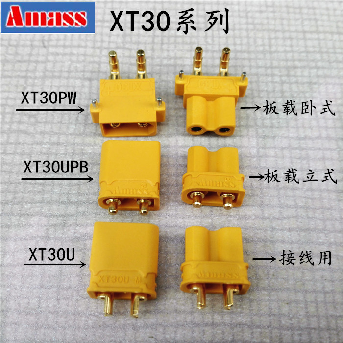
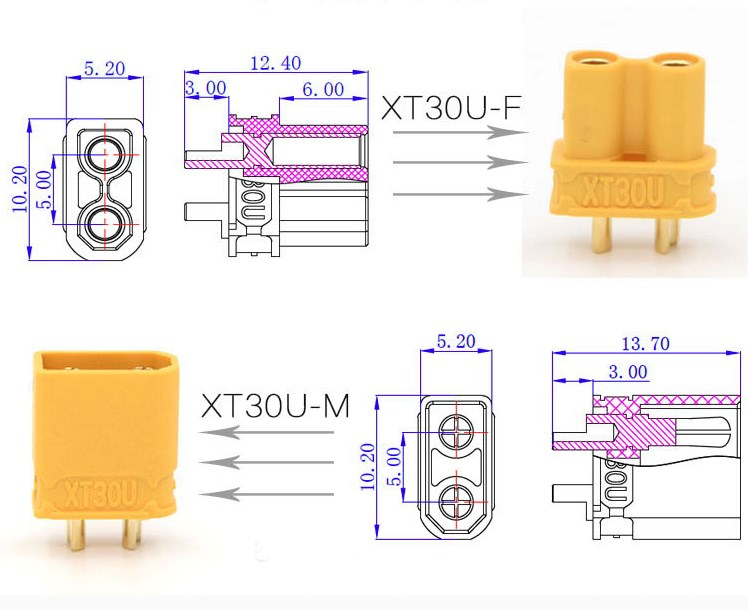
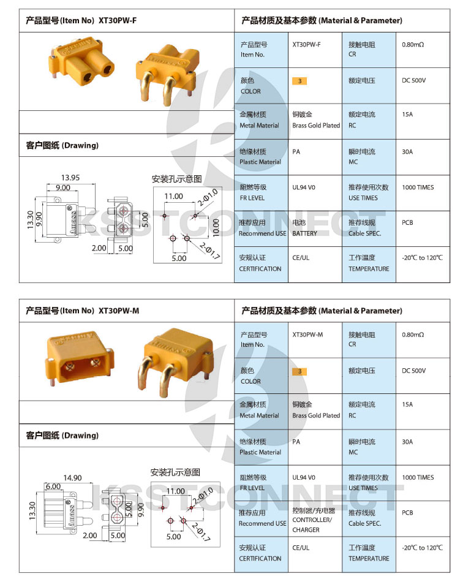

Power Connectors

B1 - Deans (T) type main connector
Used for main connection to speed controllers and motors. Used for medium to high current draw. They can be hard to solder (needs lots of heat) and sometimes the metal connector eventually slips through the plastic holder.
B2 - JST / BEC type main connector
Used for main connection to speed controllers and motors. Used for low current draw
B3 - Tamiya main battery plug
Usually used on Car and Boat batteries (NiCd / NiMh) - Female & Male
B4 - Bullet Connectors
Single wire connectors, available in a range of different sizes to suit current draw / load requirements from 2mm to 8mm
B5 - HXT Connectors
Available in 3.5mm and 4.00mm sizes. Used for main battery connectors for medium / high power applications
B6 - Traxxas Connectors
Mainly used on high current draw car and boat batteries
B7 - XT60 Connectors
Used for high current (60A) draw battery connections. There is no patient on the connector so many different companies make this connector. It is easier to solder wires to and due to the better design, the metal connectors don’t slip out of the plastic holder like the Deans connector.
There is also an XT30 (30A) which is smaller and an XT90 (90A) which is larger.
B8 - EC3 Connectors
Used for high current draw battery connections
B9 - Flight Power / Thunder Power (FP / TP) LiPo Balance Charger plug
B10 - Hyperion / PolyQuest (HP / PQ) LiPo Balance Charger plug
B11 - JST-XHR (XH) LiPo Balance Charger plug
B12 - JST-EHR (EH) LiPo Balance Charger plug
XT30 Connectors
These are the smaller version of the XL60 connector and only support 30A, but the connector is also smaller. Note there is both a version for wires and one for PCBs. Best to use it with 16/18 gauge wire:


